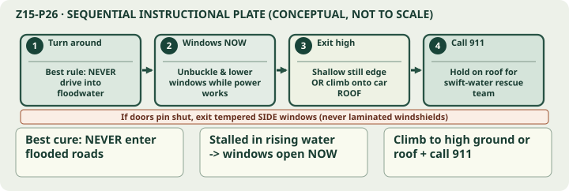

Z15-P26 · Disaster scenarios · New manuscript
Avoid flooded roads and call for rescue if trapped in a vehicle
Prevent drowning if flash floodwater unexpectedly rises around a car on a low road or underpass.
When it applies · Motorists whose vehicle stalls or begins floating in unexpectedly rising road floodwater.
Equipment · Seatbelt release, window-escape awareness (roll windows down EARLY while electrical power still works), and 911 access.

Actions
- If floodwater is rising around a vehicle, call 911 as soon as you can without delaying immediate escape from a sinking vehicle. Give the location, occupants and water conditions.[D05, T02]
- If safe high ground is immediately accessible without entering moving water, move to it. Otherwise tell dispatch what exits and hazards you can see and follow rescue instructions. A stalled vehicle in fast current is a specialist-rescue situation.[D05, T16]
- Never enter floodwater to follow another vehicle or save property. Do not depend on window glass type, vehicle stability or a predicted water depth.[D05, T16]
Failure recognition · Sitting inside a stalled sedan in a flooded underpass calling roadside assistance until rising water pins the doors shut and shorts power windows.[D05]
Verify · Confirm the group knows the turnaround rule and how to report a trapped vehicle without entering the water as a bystander.[D05, T16, ED]
Stop or change course · Rising or fast-moving water, structural uncertainty or a submerged route requires immediate emergency help.[D05, T02]
Evidence and editorial notes
- D05 · FEMA / Ready.gov · Floods (current web edition)
- Section: Floods: During; Turn Around, Don’t Drown · Conditions: Flooded roads or trails, flood alert, or post-flood re-entry
Support: Move to safe higher ground when directed, never walk or drive into floodwater, and respect closures and re-entry restrictions.
Limitations: Depth examples are warning illustrations, never safe entry thresholds. Trapped or submerged vehicles require emergency help and scene-specific response. · Conflicting evidence: See A02 claim audit for boundaries.
Editorial note: Core flood evacuation, water-avoidance, and safe re-entry evidence. · Specialist reviewer: Emergency management and flood hydrology
Primary source · checked 2026-11-24 - T02 · American Red Cross · First Aid Steps (current web edition)
- Section: First Aid Steps > Call 9-1-1 · Conditions: Lay emergency response to unresponsiveness, abnormal breathing or severe bleeding
Support: Activate EMS and get needed equipment. Follow dispatcher directions and act within training.
Limitations: Remote locations may delay EMS arrival, requiring sustained stabilization after activation. · Conflicting evidence: None; aligns with NPS-E.
Editorial note: Mandates early emergency activation and dispatcher adherence. · Specialist reviewer: EMS and wilderness medicine
Primary source · checked 2026-11-24 - T16 · NWS · Flood Safety (current web edition)
- Section: Flood Watches and Warnings; Turn Around Don’t Drown · Conditions: U.S. flood alerts and routes crossing moving or standing floodwater
Support: Use the local flood alert wording and follow directions to move to safer higher ground. Never drive around a barricade or enter a flooded route.
Limitations: Stages, timing and detours depend on event and locality; no observable safe crossing depth. · Conflicting evidence: See A02 claim audit for boundaries.
Editorial note: Clarifies Watch vs Warning decision thresholds in Z01 scenarios. · Specialist reviewer: Emergency management and meteorology
Primary source · checked 2026-11-24
Source lineage · NWS Flood Safety and Ready.gov Floods; new manuscript · Classification · New manuscript.